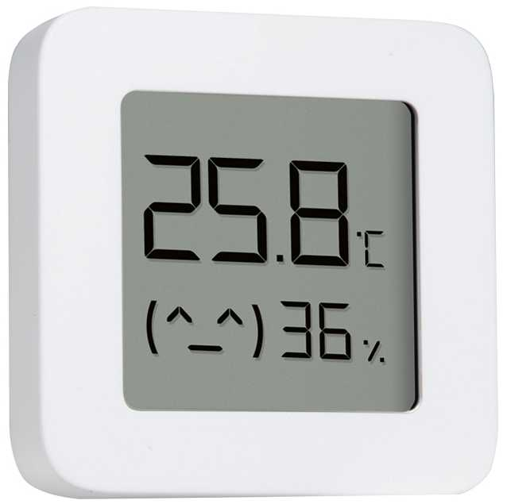
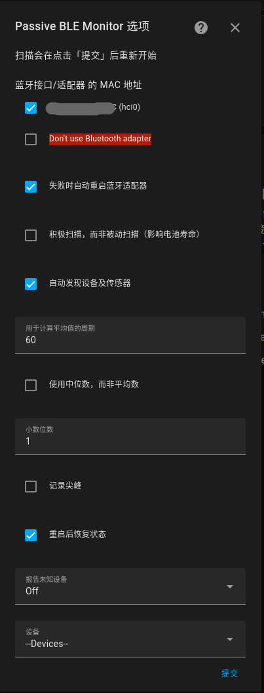
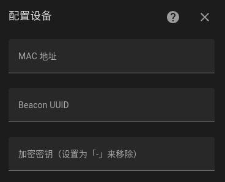
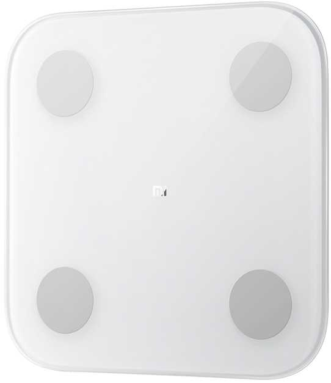
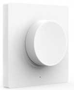
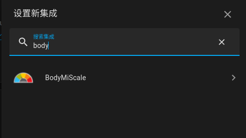
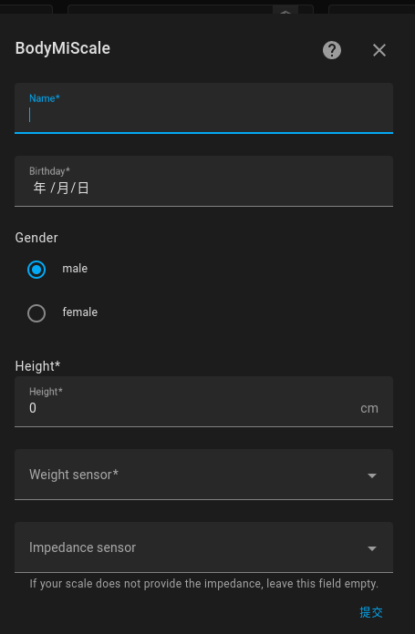

智能家居硬件采购避坑指要(三) 蓝牙设备
蓝牙特性
- 短距离通信：蓝牙技术的通信范围通常为10米以内
- 蓝牙信号穿墙能力有限,除非你购买BLE蓝牙网关中继设备,而且更容易受到干扰,尤其是不带自动跳频的蓝牙.
- 能耗相对较低：因为低功耗蓝牙设备在省电上还是比不过Zigbee设备,BLE蓝牙5.0在省电上与zigbee很接近了.
- 因此: 为了省电,米家的温度传感器(LYWSD03MMC)是大约10分钟发送一次数据,如果不刷第三方固件,想与空调联动就不要想了.
- 简单易用：智能家居蓝牙设备使用普及度高的蓝牙协议，用户不需要额外的网关或路由器即可连接和控制设备
- 目前蓝牙协议大多数是私有协议，互通性较差,HA无法直接控制,只有少量的特定厂家的低功耗蓝牙传感设备才能通过第三方Passive BLE Monitor 集成 直接接入HA,支持的设备详见下方的支持列表.
- 价格便宜:由于蓝牙技术在手机和其他消费电子设备上得到广泛应用，智能家居蓝牙设备的成本相对较低。
第三方Passive BLE Monitor 集成
注意: 最新HA版本(2022.8以后)的官方蓝牙集成开始直接支持Passive BLE 设备,目前还在移植更多的蓝牙设备.官方蓝牙集成不能与BLE Monitor集成同时工作!请做好选择,官方蓝牙集成同样支持蓝牙网关.
采用第三方Passive BLE Monitor 集成用于跳过所谓的蓝牙网关直接将蓝牙传感器设备接入HA,注意,目前只支持获取蓝牙传感器数据,不支持发送控制指令的蓝牙设备(比如:开关)!
该集成使用的前提是:需要至少支持BLE蓝牙4.0(蓝牙是向下兼容的,所以BLE蓝牙5也可)的适配器,一般的HA盒子都有,如果是用PC就看带WIFI不,一般WIFI都带蓝牙,没有就买一个支持BLE蓝牙的USB WIFI适配器. 如果你使用
开源ESPHome通用蓝牙网关接入,那么HA上可以不用配置蓝牙适配器.
BLE 监视器(Passive BLE Monitor)支持来自小米、青萍、Govee、Kegtron、Thermoplus、Brifit、Ruuvitag、iNode 等制造商的蓝牙设备,比内置蓝牙集成支持的设备多得多。详见第三方Passive BLE Monitor 集成支持的设备列表: https://custom-components.github.io/ble_monitor/by_brand
安装与使用
安装很简单,在 HACS 第三方集成商场中搜索Passive BLE Monitor并安装即可.
这里以小米蓝牙温湿度计2为例讲解使用方法. 
注意: 如果你拿到手的米家蓝牙传感器默认没有BLE Advertisements 广播,那么你必须先接入米家App才能打开广播.如果你的传感器刷了第三方ATC固件,那么就不需要先接入米家.
然后在设备和集成配置中添加Passive BLE Monitor集成即可:

- 勾选要使用的
蓝牙接口/适配器 的 MAC 地址,如果没有就勾选Don't use Bluetooth adapter让开源ESPHome通用蓝牙网关传入数据. - 勾选
自动发现设备及传感器后会自动添加发现的蓝牙传感器设备(前提是没加密) - 勾选
重启后恢复状态(可选): 是否重启后恢复设备状态,如果没有勾选,那么重启后在没有收到广播前,设备状态为Unavailable - 对于加密数据传输的,还是必须点最下面的
设备下拉列表框,选择Add devices... - 点击
提交按钮. - 如果选择了添加设备,这时候会弹出
配置设备对话框- 输入蓝牙设备的MAC地址,如果是Beacon输入Beacon的UUID
- 输入加密密钥,如果有的话
- 最后点击
提交按钮

等待几分钟,如果一切顺利,就可以看到该集成下出现的新设备.
开源ESPHome通用蓝牙网关
因为蓝牙穿墙能力弱,为了解决蓝牙信号穿墙问题,就有了所谓的开源ESPHome通用蓝牙网关: 蓝牙信号过不来的就走开源ESPHome通用蓝牙网关,通过wifi信号再到HA上的Passive BLE Monitor 集成. 另外开源ESPHome通用蓝牙网关还可以接入只支持Active BLE connection的蓝牙设备.
- 蓝牙信号过不来的就走开源ESPHome通用蓝牙网关,通过wifi信号再到HA上的 Passive BLE Monitor 集成.
- 接入只支持Active BLE connection的蓝牙设备
硬件很简单,你只需要自备ESP32的主板一枚,建议最好选4M Flash的, 虽然2M的也能刷,但是稍微麻烦些. 我选的是ESP-C3-32S(4M)的开发板.
ESP32-C3是Espressif新出的RISC-V 32位单核处理器(160MHz)支持蓝牙5.0(BLE支持),以前的ESP32是基于蓝牙4.2.
ESP32-C3板子目前最便宜的是LuatOS(合宙)的ESP32C3-CORE开发板（简版）,￥9.9.
然后准备好ESPHome开发环境,请升级到ESPHome的最新版(至少2022.1版本以后),请不要在arm环境下开发,因为Espressif目前还不支持ESP-C3在arm下的编译.
在Linux环境下安装使用很简单:
sudo apt -y install python3 python3-pip python3-pip-whl
sudo -H pip3 install --upgrade pip
pip3 install --user esphome
# To set this permanently, you can run echo 'export PATH=$PATH:$HOME/.local/bin' >> $HOME/.bashrc
export PATH=$PATH:$HOME/.local/bin
# You may need to logout and back in for the new group to take effect.
sudo usermod -a -G dialout $USER
好了,刷机的YAMLbluetooth-gateway.yaml配置如下(如果板子不是ESP32-C3请自行调整board参数),记得在相同目录下的secrets.yaml文件中填好!secret中的参数:
substitutions:
# Name the device and it's entities
device: ble_gateway
device_name: blegateway1
esphome:
name: $device_name
comment: $device
platformio_options:
board_build.flash_mode: dio
# 还可以通过 tasmota 使用 Arduino:
board_build.mcu: esp32c3
platform_packages:
- platformio/framework-arduinoespressif32 @ https://github.com/espressif/arduino-esp32.git#2.0.2
esp32:
board: esp32-c3-devkitm-1
variant: esp32c3
framework:
# 使用 esp-idf
# type: esp-idf
# sdkconfig_options:
# CONFIG_BT_BLE_50_FEATURES_SUPPORTED: y
# CONFIG_BT_BLE_42_FEATURES_SUPPORTED: y
# CONFIG_ESP_TASK_WDT_TIMEOUT_S: "10" # Defaults to 5
# 使用 tasmota:
type: arduino
version: 2.0.3
platform_version: https://github.com/tasmota/platform-espressif32/releases/download/v.2.0.3/platform-espressif32-v.2.0.3.zip
# version: 2.0.2
# platform_version: https://github.com/tasmota/platform-espressif32/releases/download/v2.0.2.3/platform-espressif32-2.0.2.3.zip
external_components:
- source: github://myhomeiot/esphome-components
# WIFI 每个信道停留的时间，默认主动扫描为 120 ms，被动扫描为 360 ms。
esp32_ble_tracker:
scan_parameters:
interval: 320ms # if Option “Software controls WiFi/Bluetooth coexistence” is enabled, the BLE scan interval shall not exceed 0x100 slots (about 160 ms).
window: 100ms
duration: 1min # Defaults to 5min
# active: true # Defaults to true
# Enable logging
logger:
level: DEBUG # defaults to DEBUG, NONE ERROR WARN INFO DEBUG VERBOSE VERY_VERBOSE
# Enable Home Assistant API
api:
reboot_timeout: 1h
ota:
password: !secret ota_password
wifi:
ssid: !secret wifi_ssid
password: !secret wifi_password
# Enable fallback hotspot in case wifi connection fails
ap:
ssid: "$device_name Fallback Hotspot"
password: !secret ap_password
ble_gateway:
id: $device_name
# devices:
# - mac_address: 01:23:45:67:89:AB
# - mac_address: !secret lywsd03mmc_mac
on_ble_advertise:
then:
- homeassistant.service:
service: ble_monitor.parse_data
data:
packet: !lambda return packet;
gateway_id: $device_name
- homeassistant.event:
event: esphome.on_ble_advertise
data:
packet: !lambda return packet;
binary_sensor:
- platform: homeassistant
id: ble_gateway_discovery
entity_id: binary_sensor.ble_gateway
attribute: discovery
on_state:
then:
lambda: id($device_name).set_discovery(x);
text_sensor:
- platform: homeassistant
id: ble_gateway_devices
entity_id: binary_sensor.ble_gateway
attribute: devices
on_value:
then:
lambda: id($device_name).set_devices(x);
# IP address of device. Not really needed for HA (as HA already knows it), but for showing on the display during startup. The startup screen will leave on if no instance connects to the API.
- platform: wifi_info
ip_address:
name: $device_name IP address
id: ip_address
# ESPHome version used to compile the app
- platform: version
name: $device_name ESPHome Version
sensor:
# WiFi signals strength sensor
- platform: wifi_signal
name: $device_name WiFi Signal Sensor
update_interval: 60s
# secrets.yaml 例子
ota_password: your ota password
wifi_ssid: your wifi ssid
wifi_password: your password
ap_password: your password
注意： 如果使用LuatOS(合宙)的ESP32C3-CORE开发板（简版）的arduino框架要么禁用log组件,要么改用esp-idf框架并设置log组件的参数为:hardware_uart: USB_SERIAL_JTAG.
USB插上ESP32开发板,看清楚串口号(ls /dev/tty*),一般是/dev/ttyUSB0,然后执行如下语句编译烧录固件:
# choose the port after compiling
esphome run bluetooth-gateway.yaml
至此,通用蓝牙网关的硬件烧录部分完成.
接着,还要在HA上配置与Passive BLE Monitor 集成的搭配部分.
注意:
- Passive BLE Monitor 集成 版本要求 至少是 8.x
input_boolean.settings_ble_gateway是否启用蓝牙网关input_boolean.settings_ble_gateway_discovery是否启用设备自动发现
修改HA configuration.yaml文件:
input_boolean:
ha_started:
initial: false
settings_ble_gateway:
name: BLE Gateway
icon: mdi:bluetooth
settings_ble_gateway_discovery:
name: BLE Gateway Discovery
icon: mdi:bluetooth-connect
input_text:
settings_ble_gateway_add_device:
name: BLE Gateway Add Device
icon: mdi:bluetooth-connect
initial: ''
template:
- binary_sensor:
- name: BLE Gateway Add Device
state: "{{ (state_attr('binary_sensor.ble_gateway_add_device', 'mac_address')) }}"
availability: "{{ is_state('input_boolean.ha_started', 'on') }}"
attributes:
mac_address: "{{ states('input_text.settings_ble_gateway_add_device') | replace(':', '') | trim }}"
- binary_sensor:
- name: BLE Gateway
icon: mdi:bluetooth
state: "{{ is_state('input_boolean.settings_ble_gateway', 'on') }}"
availability: "{{ is_state('input_boolean.ha_started', 'on') }}"
attributes:
discovery: "{{ is_state('input_boolean.settings_ble_gateway_discovery', 'on') }}"
devices: "{{ states | selectattr('entity_id', 'search', '^(device_tracker||(binary_)?sensor).ble_') | selectattr('attributes.mac_address', 'defined') | map(attribute='attributes.mac_address') | unique | sort | join('') | replace(':', '') if is_state('binary_sensor.ble_gateway', 'on') }}"
然后修改automations.yaml文件:
- alias: HA Start automation
initial_state: true
trigger:
platform: homeassistant
event: start
action:
service: input_boolean.turn_on
entity_id: input_boolean.ha_started
id: ha_start
重启HA即可. 对了记得把刚刚新鲜出炉的蓝牙网关加入进来.
然后该蓝牙网关就会自动转发已发现的并且在Passive BLE Monitor 集成中设备.
如果要添加新的蓝牙设备请在Passive BLE Monitor 集成上添加.
如果想只针对个别设备在指定的蓝牙网关上转发,那么请使用input_text.settings_ble_gateway_add_device添加该设备的MAC地址.
注意: Passive BLE Monitor 集成上的自动发现设备及传感器不能在蓝牙网关上使用,只限本地HA. 换句话说,如果HA本机没有蓝牙适配器,只用蓝牙网关,那么必须手动在Passive BLE Monitor 集成中添加设备.
蓝牙网关接收到已注册设备的广播后会同时触发事件esphome.on_ble_advertise发送原始数据.
最后,记得设置input_boolean.settings_ble_gateway为"on",启用蓝牙网关功能.
设置input_boolean.settings_ble_gateway_discovery为"on",启用自动发现功能.
已知问题:
- ESP32可能会遗漏广播消息,这是由于ESP32的蓝牙和WIFI共用通道造成,目前无解,除非不用WIFI,才能完全不遗漏.
调教scan_parameters参数会有好转,但是依然不能保证. 可以参阅: 【难题求解】ESPHome+ESP32打造通用蓝牙网关漏收广播信息
版本更新
- 2022-5-09: [Bug] esp-idf 下无法更改
scan_parameters, 使用 Arduino framework now. - 2022-5-21: [feat] 新增 启用自动发现开关
我买过的设备
- 小米蓝牙温湿度计2 价格便宜(Zigbee的一半不到)还带屏幕, 但是原始固件10分钟才报告1次温湿度,耗电高, 因此需要刷第三方开源固件
- 刷入第三方开源固件后
- 更省电
- 可调节报告频率,默认是2.5秒报告1次温湿度,这个频率联动完全足够,报告频率越低越省电.
- 可以读取设备上记录的温湿度数据(循环记录19632个测量结果),记录的时间间隔也可以配置
- 可以校准温湿度以及设置自己的舒适温度区间
- 可调节蓝牙发射功率(自己权衡省电或信号覆盖率)
- 刷入第三方开源固件后
- 青萍动作和环境光传感器(CGPR1), 分体构思不错,光强能够识别弱光,缺点是动作感知
没人会偶尔失灵,感知有人灵敏- 我主要是用它的环境光(光强)传感器,因为绿米M1S网关带和绿米(RTCGQ11LM)人体PIR传感带的光强传感器弱光下全部为0,根本没用!
- 小米体脂秤2: 因为是接收广播所以数据不能立马出现,开机后要等一会儿,换句话说首次测量结果可能不会出现
- 
- 查看体脂信息需要安装 BodyMiScale 集成 以及 前端 lovelace-body-miscale-card 详见后述
- 自制开源ESPHome通用蓝牙网关(ESP32-C3)
- Yeelight 智能调光开关(YLKG08YL) 贴装版 旋动一格有明显的喀哒声音,不错,但是,并没有信号发出,必须连续扭动两格(大约)才是1 step, 如果单独一格一格的扭动,也没有信号.
- 
小米蓝牙温湿度计2刷第三方开源固件
- 小米蓝牙温湿度计2价格便宜,只有Zigbee温湿度计的一半不到,还带屏幕
- 蓝牙穿墙能力弱于Zigbee
- 官方原始固件:
- 10分钟报告1次温湿度,大约1小时报告1次电量.如果想和其它设备联动(如,空调),这个上报频率就没法用.
- 依然耗电
- 无法调整配置
而在刷入第三方开源固件后:
- 更省电
- 可调节报告频率,默认是2.5秒报告1次温湿度,这个频率联动完全足够,报告频率越低越省电.
- 可以读取设备上记录的温湿度数据(循环记录19632个测量结果),记录的时间间隔也可以配置
- 可以校准温湿度以及设置自己的舒适温度区间
- 可调节蓝牙发射功率(自己权衡省电或信号覆盖率)
第三方固件刷机
使用Chrome浏览器即可直接Web刷机,请启用浏览器的#enable-experimental-web-platform-features功能后重启浏览器.
- 点击 TelinkMiFlasher.html 进入刷机页面
- 点击
Connect按钮,连接待刷机的小米蓝牙温湿度计2,设备名一般是:LYWSD03MMC - 配对连接后,点击
Do Activate按钮,自动获取小米蓝牙温湿度计2的token和绑定密码 - 然后点
Custom firmware ver 3.7按钮, 旁边那个Original_OTA_Xiaomi_LYWSD03MMC_v1.0.0_0130.bin按钮是恢复原来的官方固件 - 点
Start Flashing按钮开始刷机 - 成功后即可在该页面上修改各种配置参数.要想更省电可以把发射功率和上报频率调节得更小些即可.
- 点击参数配置的
Show all mi keys按钮,显示设备的MAC地址,并自己记录下来温湿度计的MAC(不包括最后4位,最后4位是随机数,不是MAC地址),后面要用
最后,请关闭刚才用于刷机的蓝牙适配器设备,不然HA设备没法发现小米蓝牙温湿度计2.
我修改后的温度计配置:
- Advertising interval: 3125 ms
- Measure interval: 4 x(Advertising interval)
- Connect latency: 2600 ms
- Recording averaging measurements to flash memory: 90 x(measure interval)
小米体脂秤2接入HA多人体重自动记录方案
本解决方案可以支持多人体重自动记录(前提是每个人有明显的体重区分或阻抗区分),以及完美显示最近一次的的人体体重,体脂信息.
使用的前提硬件,需要至少支持BLE蓝牙4.0(蓝牙是向下兼容的,所以BLE蓝牙5也可)的适配器,一般的HA盒子都有,如果是用PC就看带WIFI不,一般WIFI都带蓝牙,没有就买一个支持的USB WIFI适配器.
请首先安装 Passive BLE Monitor 集成.
如果你已经勾选了Passive BLE Monitor 集成的"自动发现设备及传感器",那么小米体脂秤2开机后多等一会(保持体脂秤屏幕常亮),就应该看到在该集成(Bluetooth Low Energy Monitor)下多出一个Mi Scale V2设备,你可以重命名一个有意义的名字.
如果你希望看到详细的体脂信息,那么需要先在HACS第三方集成商场中安装 BodyMiScale 集成: 点击 HACS -> 集成 -> 自定义存储库(右上角三个点中) -> 存储库设置为 “https://github.com/dckiller51/bodymiscale” , 类别为: 集成
注意,BodyMiScale 集成的最新版本2.1 版本需要您安装的Home Assistant是 2022.4 以上版本才能支持,否则您只能安装bodymiscale@2.0以下版本,切勿升级.
BodyMiScale 集成的最新版本已经支持直接在配置界面中配置:
配置->设备与服务->添加集成-> 搜索BodyMiScale- 
- 开始配置
BodyMiScale- 
- 如果有多人重复上述操作
如果是BodyMiScale@2.0及以下的版本必须在configuration.yaml手工配置传感器:
bodymiscale:
your_name1:
sensors:
weight: sensor.ble_stabilized_weight_XXXX
impedance: sensor.ble_impedance_XXXX
height: 176
born: "1990-04-10"
gender: "male"
model_miscale: "181B" # miscale2
your_name2:
sensors:
weight: sensor.ble_stabilized_weight_XXXX
impedance: sensor.ble_impedance_XXXX
height: 176
born: "1990-04-10"
gender: "male"
model_miscale: "181D" # miscale1
重启后就会多出来名为: bodymiscale.your_name1 和 bodymiscale.your_name2的实体.
然后你需要在HACS第三方集成商场中安装lovelace-body-miscale-card 界面, 来使用该实体.
先加库: 点击 HACS -> 集成 -> 自定义存储库(右上角三个点中) -> 存储库设置为 https://github.com/dckiller51/lovelace-body-miscale-card , 类别为: Lovelace
然后再安装该界面. 最后复制仓库中的图片文件(src/images/*)到config/www/images目录下.
接着就可以在 lovelace 中进行配置了:
type: custom:body-miscale-card
entity: bodymiscale.your_name1
show_name: true
image: /local/images/miscale2.jpg
show_states: true
show_attributes: true
show_body: true
show_buttons: true
show_toolbar: true
如果有多个人需要分别记录,并且可以通过体重区分的话,当然你也可以加上阻抗值(impedance)来判断,那么可以在configuration.yaml中:
- platform: template
sensors:
# the first person's weight
weight_your_name:
friendly_name: "Weight Your Name"
value_template: >-
{% set weight = states('sensor.ble_stabilized_weight_XXXX') | float %}
{% if 66.9 <= weight <="77" %} {{ states("sensor.ble_stabilized_weight_xxxx") }} {% else states("sensor.weight_your_name") endif span> unit_of_measurement: 'kg'
icon_template: mdi:weight-kilogram
# the first person's impedance
impedance_your_name:
friendly_name: "Impedance Your Name"
value_template: >-
{% set weight = states('sensor.ble_stabilized_weight_XXXX') | float %}
{% if 66.9 <= weight <="77" %} {{ states("sensor.ble_impedance_xxxx") }} {% else states("sensor.impedance_your_name") endif span> unit_of_measurement: 'ohm'
icon_template: mdi:omega
问题又来了,如何显示最近的历史数据. 因为当电子秤离线后或者HA重启后,就没当前数据(最近一次的)了!
还是用的SQL Sensor获取的最近一次的历史数据:
- platform: sql
db_url: !secret db_url
queries:
- name: Latest Weight Your Name
query: "SELECT state FROM states WHERE entity_id = 'sensor.weight_your_name' and state <> 'unknown' and state <> 'unavailable' ORDER BY created DESC LIMIT 1;"
column: "state"
- name: Latest Impedance Your Name
query: "SELECT state FROM states WHERE entity_id = 'sensor.impedance_your_name' and state <> 'unknown' and state <> 'unavailable' ORDER BY created DESC LIMIT 1;"
column: "state"
- platform: template
sensors:
weight_your_name:
friendly_name: "Weight Your Name"
value_template: >-
{% set weight = states('sensor.ble_stabilized_weight_XXXX') | float(0) %}
{% set id = 'weight_your_name' %}
{% if 66.9 <= weight <="77" %} {{ }} {% elif state_attr("sensor.latest_"+id, 'state') else states("sensor."+id) endif span> unit_of_measurement: 'kg'
icon_template: mdi:weight-kilogram
impedance_your_name:
friendly_name: "Impedance Your Name"
value_template: >-
{% set weight = states('sensor.ble_stabilized_weight_XXXX') | float(0) %}
{% set id = 'impedance_your_name' %}
{% if 66 <= weight <="77" %} {{ states("sensor.ble_impedance_xxxx") }} {% elif state_attr("sensor.latest_"+id, 'state') else states("sensor."+id) endif span> unit_of_measurement: 'ohm'
icon_template: mdi:omega
注意: db_url: !secret db_url 要填写自己recorder数据库的url. 详细请参阅 : SQL Sensor